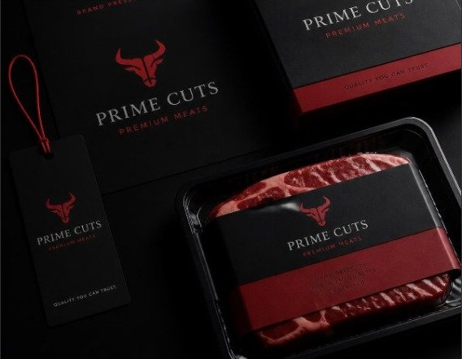
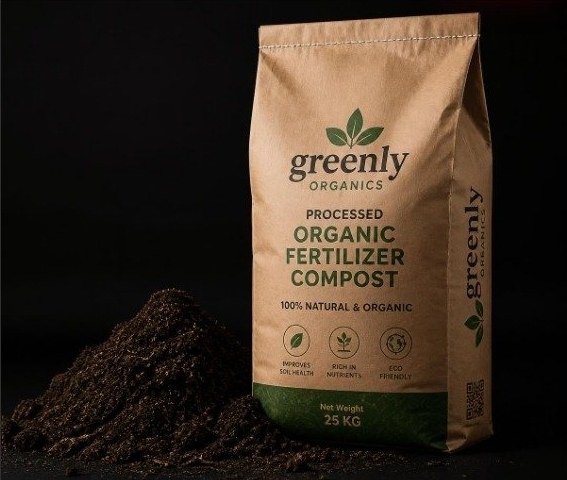

El Legado
La Proteína Premium
ANGUSS: Abastecimiento de carnes de selección con trazabilidad directa desde el campo.
La Sostenibilidad
HERENCIA ORGÁNICA: Nutrientes para la agricultura desde la economía circular.
Nuestro Origen
La evolución del campo tradicional hacia la gestión agropecuaria moderna.
Fundada sobre los cimientos de la experiencia y el esfuerzo de Maribel y Moche, M&M Agropecuario consolida más de dos décadas de experiencia en el sector cárnico tradicional peruano. Hoy, asumimos el relevo generacional transformando nuestro legado familiar en una empresa de triple impacto.
Nuestra visión es escalar el mercado de Lima e Ica bajo un modelo de integración vertical y sostenibilidad. No solo abastecemos proteínas de alta calidad; gestionamos un ecosistema de economía circular donde cada recurso de nuestra crianza técnica en el Valle de Ica se reinvierte en el desarrollo agrícola, minimizando el impacto ambiental y garantizando la máxima confianza B2B.
20+
Años de trayectoria
en el sector agropecuario
en el sector agropecuario
Líneas de Negocio
Dos divisiones comerciales, un mismo estándar de control.

Unidad 01
ANGUSS | Carnes de Selección
Abastecemos al sector HORECA (Hoteles, Restaurantes y Catering) e institucional. Ofrecemos lotes seleccionados de porcinos, vacunos, ovinos y caprinos. Controlamos de manera estricta el engorde balanceado en Ica y el beneficio en camal autorizado, garantizando inocuidad total, facturación formal y control logístico.
[ Cotiza tu Pedido ]Unidad 02
HERENCIA ORGÁNICA | Bio-Nutrientes de Suelo
El reflejo de nuestro compromiso por la sostenibilidad. Cerramos el ciclo biológico de nuestros centros de engorde transformando los recursos naturales de la crianza en guano y abono orgánico, para optimizar los suelos agrícolas con trazabilidad ecológica certificada que impulsa el rendimiento de sus cultivos.
[ Solicita la Ficha Técnica ]